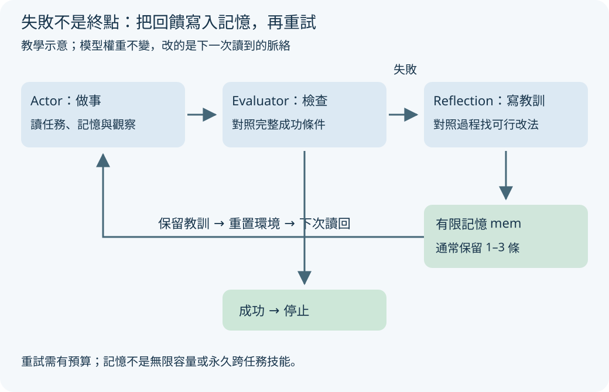
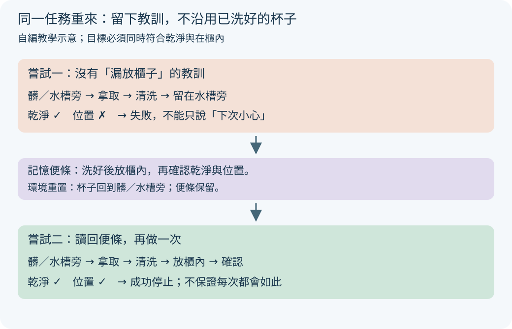
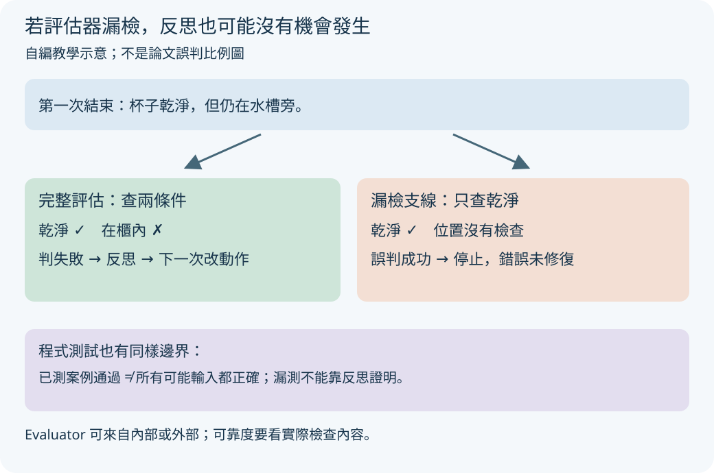

忘記把洗好的杯子放回櫃子，下次你可能貼張便條提醒自己。Reflexion 也讓語言模型把失敗教訓寫下來，再帶進下一次嘗試；改的是讀到的記憶，不是模型權重。
洗好了，為什麼還沒完成？
你答應把杯子洗乾淨並放進櫃子，結果洗好就走開。有人提醒「還沒完成」，光說「下次更小心」不太有用。比較有用的便條是：「洗好後還要放進櫃子，並確認杯子的位置。」下次做同一件事前，先讀這張便條。
Reflexion 的想法就是把失敗回饋整理成可執行的文字教訓，保留給下一次嘗試。以下洗杯任務、動作、評估條件與反思全部自編，是教學示意，不是原文軌跡或實驗結果。原文第 3 節、圖 2 描述方法。
三個角色與記憶的完整迴圈

放大閱讀圖解 ↗ · 窄螢幕可在圖內左右滑動。

圖解文字說明
- Actor 做事
讀任務與記憶，選動作並收到環境觀察；留下當次軌跡。
- Evaluator 檢查
依成功條件評估軌跡；通過就停止，失敗則提供回饋。
- Reflection 寫教訓
根據軌跡、回饋與記憶，寫下一次可採取的改法；存入有限記憶。
- 重置與再試
保留反思但重置環境，Actor 下次讀回記憶；成功或達預算時停止。
三個角色，共同整理一次失敗
Actor 是做事的人：讀任務與目前觀察，選擇下一個動作。Evaluator 是檢查的人：看這次嘗試是否符合成功條件。Self-Reflection 是寫教訓的人：把任務、過程與回饋整理成下一次能採取的改法。三者是功能角色，不一定要使用三套不同的模型權重。
本例成功條件有兩項：「杯子乾淨」以及「杯子在櫃內」。Actor 不能把「已洗好」自行當成整個任務完成；Evaluator 應對照兩項條件。Reflection 則要指出漏了放回，不能只留下「這次失敗了」。
記憶是存放反思文字的便條盒。下一次 Actor 讀入便條，做事的輸入脈絡改變，模型權重保持不變。這是第 3 節的語言回饋方法，並不是失敗一次就偷偷微調模型。
第一次：洗好後停下，檢查指出缺口
任務：把水槽旁的杯子洗乾淨並放進櫃子。起始時，杯子是髒的，位置在水槽旁。Actor 拿杯子、洗杯子，再把杯子留在水槽旁，宣布完成。
Evaluator 查狀態：「乾淨」為真，「在櫃內」為假，所以判定失敗。這個回饋指出整體未完成；Reflection 再對照動作紀錄，找出漏掉的子目標。為什麼要留過程？只看到失敗分數，無法知道是沒洗乾淨、放錯位置，還是根本沒拿到杯子。
自編教學示意，非原文實驗
目標：乾淨 AND 在櫃內
起始：髒／水槽旁
拿杯子 → 洗杯子 → 留在水槽旁 → 宣告完成
評估：乾淨=true，在櫃內=false → 失敗
反思：我完成了清洗，卻漏掉放進櫃子。
下次洗好後放入櫃內，再確認乾淨與位置兩項狀態。兩次嘗試，差在讀回可執行教訓

放大閱讀圖解 ↗ · 窄螢幕可在圖內左右滑動。

圖解文字說明
- 第一次無此教訓
髒杯在水槽旁；拿取、清洗後停下，杯子仍在水槽旁，位置條件失敗。
- 保留記憶並重置
便條寫「洗好後放櫃內，再查兩條件」；環境回到髒杯在水槽旁，不能沿用已洗好的狀態。
- 第二次改動作
讀便條後拿取、清洗、放櫃內並檢查；乾淨與位置皆符合才停止。
第二次：保留教訓，重置環境後再做
把剛才的反思存入記憶，重置環境，再把同一任務交給 Actor。重置的意思是杯子回到髒的、在水槽旁的初始狀態；不會因前次已洗好，就直接沿用乾淨杯子。記憶便條則仍留著。
Actor 先讀便條，再拿杯子、清洗、放入櫃子並檢查。Evaluator 這次確認兩條件都成立，才判成功。這是教學例子的成功路線，並非保證加一張反思便條，模型下次就一定照做。
「反思有幫助」的可見差別，是新嘗試增加了放入與確認動作，而不是文字變得更有悔意。若失敗還是一樣，就要檢查教訓是否具體、Actor 是否讀到它，以及評估回饋是否正確。重試也應有次數上限，避免無限循環。
保留記憶：洗好後放入櫃內，確認乾淨與位置。
重置環境：髒／水槽旁
讀記憶 → 拿杯子 → 清洗 → 放入櫃子 → 檢查
評估：乾淨=true，在櫃內=true → 成功並停止30秒自測（自編教學例）
自編教學例：洗杯任務重置後，第二次嘗試保留哪些東西？A：洗好後放入櫃子的反思便條；B：上次已洗好杯子的環境狀態；C：更新後的模型權重。
看答案與理由
本例只保留 A。環境重置後，杯子回到髒的、在水槽旁的起始狀態，所以不保留 B；Reflexion 不更新模型權重，所以沒有 C。保留便條仍要真的執行並接受評估，不能只讀了教訓就宣告成功。
誤判支線：通過哪些檢查，不等於全部正確

放大閱讀圖解 ↗ · 窄螢幕可在圖內左右滑動。

圖解文字說明
- 完整條件
任務要求杯子乾淨且在櫃內；第一次只有乾淨成立，完整評估應回報失敗。
- 漏檢的成功支線
若評估器只檢查乾淨，會誤判成功並停止，漏放櫃子的錯誤沒有被修復。
- 測試覆蓋邊界
自生程式測試也可能漏案例；全部通過只說明已測案例通過，不能證明未測情況正確。
如果檢查的人也看錯呢？
若 Evaluator 只看杯子乾不乾淨，第一次就可能被誤判成功，於是流程過早停止，根本不會寫下「漏放櫃子」的教訓。回饋是內部自評還是外部訊號，不會自動決定它是否可靠；必須看它檢查了什麼。
原論文的評估器可用答案完全匹配、手寫規則、語言模型判斷，或程式的自生測試。它不是一律完美的外部裁判。第 4.3 節指出：錯誤程式也可能通過全部內部測試，使系統過早提交；正確程式也可能被錯誤測試誤判。
杯子例子的對應提醒是：只檢查「乾淨」不等於檢查「乾淨且在櫃內」。程式也是如此，測試通過只代表通過已寫出的案例；沒有涵蓋的邊界條件，不能由反思文字補成正確性證明。這個對應是本頁教學延伸。
便條有容量，改進也有邊界
原文第 3 節把記憶限制為通常 1–3 條經驗的滑動窗口；舊反思可能被新反思擠掉。它所說的長期記憶是相對於當次完整軌跡，不能直接理解成無限容量、永久跨任務累積技能。
Reflexion 不更新模型權重。作者稱文字教訓像 semantic gradient，意思是「語意上的改進方向」；這是比喻，不是反向傳播算出的數值梯度。它可能提供錯誤診斷，也可能讓下一次沿用錯誤假設。
第 5 節提醒方法仍可能卡在不好的局部解；附錄 B.1 的購物環境實驗未見改善。需要廣泛探索、可靠評估或複雜狀態追蹤時，不能只靠更多反思保證成功。把失敗寫成漂亮句子，並不等於已找到原因。
方法細節：記憶改變輸入，沒有改模型權重
原文第 3 節以 r_t = M_e(τ_t) 表示評估器對第 t 次軌跡 τ_t 的分數。反思模型讀入軌跡、分數與記憶，產生文字經驗 sr_t，再存回 mem。下一次 Actor 以新記憶為額外輸入決策。τ 是軌跡，即當次動作與觀察的紀錄；mem 是有限的反思緩衝。
圖 2 與 Algorithm 1 串起 Actor、Evaluator、Self-Reflection 的回合迴圈；第 4.1 節明確描述失敗後更新記憶、重置環境、開始新嘗試。實作應在成功或達嘗試預算時停止，不要無限重跑。
ReAct 可以當 Actor，負責一次嘗試內的推理、行動與觀察；Reflexion 再把失敗教訓帶到下一次嘗試。兩者位於不同層次，並非彼此替代。
實驗數字：91% 不是完全不重試的一發命中
原文第 4.3 節表 1 的 HumanEval Python 成績為 Reflexion 91.0% pass@1，GPT-4 比較值為 80.1%。這裡評估一個最終提交，但提交前允許內部自生測試、反思與多次修正。它不等於不檢查、不重試地直接生成一次就有 91% 成功率。
作者使用自生測試協助內部修改，而非用隱藏正式測試答案來挑選提交；第 4.3 節因此主張可報 pass@1。公平比較時仍要一起看內部嘗試預算、工具呼叫與模型成本，不能只比最後的指標名稱。
同一表的 MBPP Python，Reflexion 為 77.1%，低於 GPT-4 比較值 80.1%，所以不是每個資料集都改善。第 4.3 節分析中，內部測試通過但提交仍錯的比例，MBPP Python 為 16.3%，HumanEval Python 為 1.4%；這是特定測試設定的結果，不能當作任意評估器的錯誤率。
第 4.1 節的 ALFWorld，ReAct 加 Reflexion 在 12 次連續嘗試過程中累積解出 134 題中的 130 題。這是多次嘗試的累積解題結果，不是初次嘗試的成功率，也不是真實家務機器人的可靠度。
原文先看哪裡？
先看圖 1 的失敗、評估、反思、下次軌跡；再看圖 2 與 Algorithm 1，找出記憶如何回到 Actor。讀第 3 節時，特別區分當次軌跡與反思記憶。
再讀第 4.1 節的重置與記憶截斷，第 4.3 節的自生測試、表 1–2 及錯誤評估分析。最後讀第 5 節與附錄 B.1，確認方法沒有成功保證。
本庫摘要與繁中精要翻譯提供閱讀入口；本頁洗杯例子及三張圖均為自編教學，不是論文實驗的改寫。
原文與來源
此頁依下列固定快照編寫；教學例子與程式片段用來解釋方法，請回到原文確認研究設定與結果。
- arXiv 原始論文 2303.11366 ↗（公開）
- 原庫專屬導讀／閱讀筆記 ↗（私有庫，需要 GitHub 存取權；快照 f60363c）
- 原文：第 3 節、圖 2、Algorithm 1 ↗
- ALFWorld：第 4.1 節 ↗
- 程式結果與評估錯誤：第 4.3 節、表 1–2 ↗
- 局限：第 5 節 ↗
- Reflexion arXiv 入口 ↗